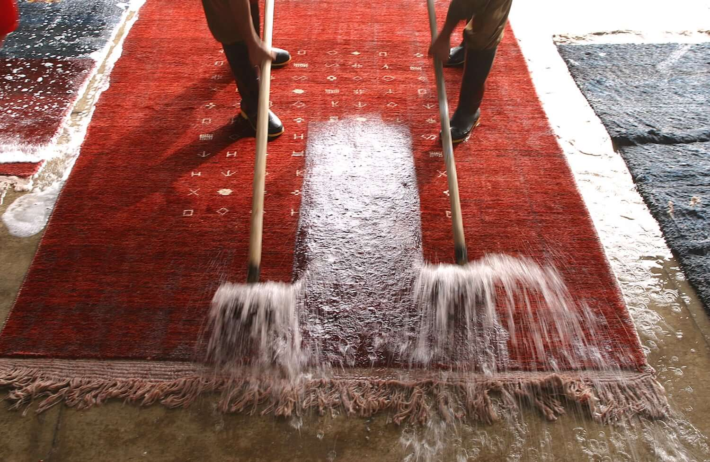

Lavaggio

Pulizia profonda
Lavaggio tappeti
Realizzato secondo la tecnica orientale tradizionale, con acqua e sapone neutro — mai a secco. Il tappeto viene sanificato e igienizzato in profondità, tornando morbido e con i colori brillanti.
- Ravviva e fissa i colori
- Rimuove polvere in profondità
- Igienizza da germi e batteri
- Elimina macchie e odori
- Trattamento anti-tarme
- Rende le fibre morbide
Preventivo lavaggio
Consigliato ogni 2 anni circa